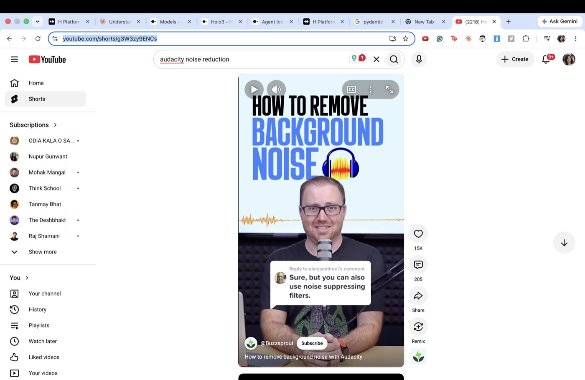
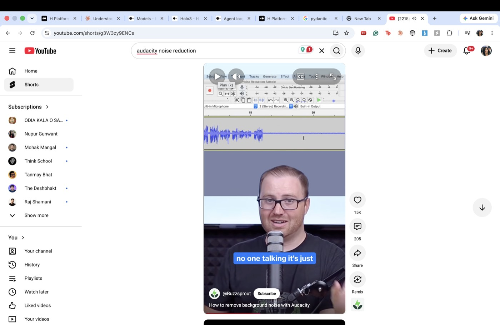
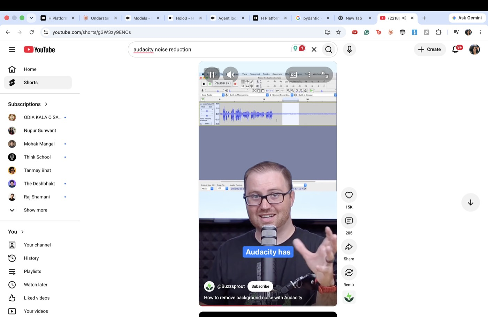
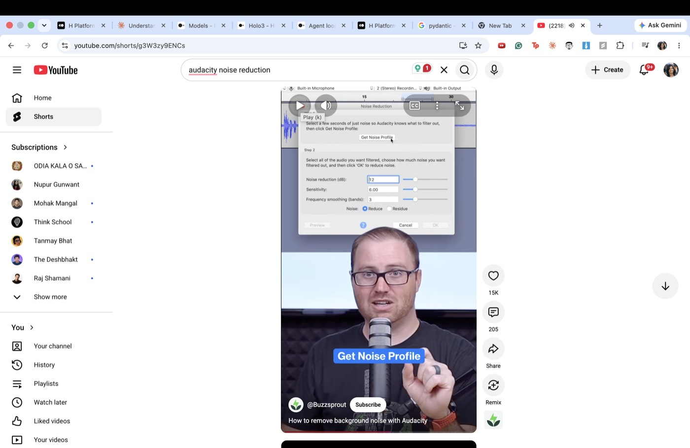
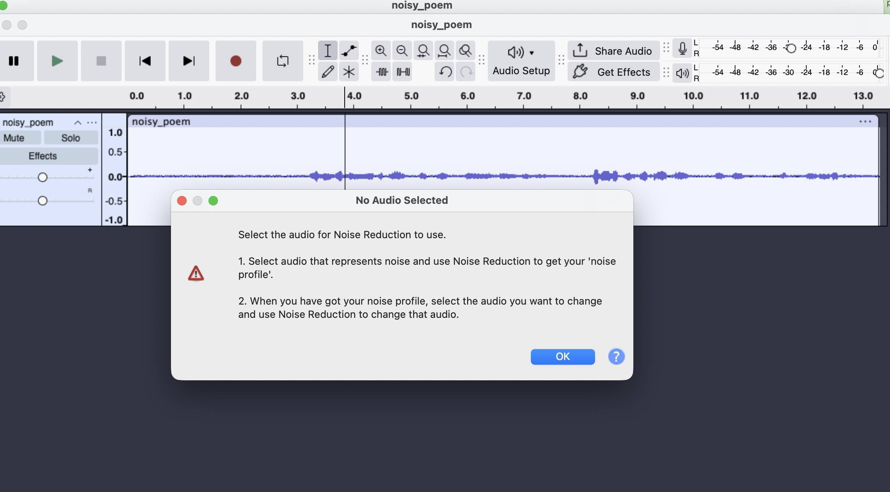

This is the real output of the pipeline in this repo — not a mockup. Seven checkpoints, a screenshot per step where one was captured, and two steps it only added after watching itself fail.
Select a few seconds of audio that contains only background noise (no talking or other content).

Click the "Get Noise Profile" button in Step 1 of the Noise Reduction dialog.

In Step 2, adjust the three sliders: Noise reduction (12 dB), Sensitivity (6.00), Frequency smoothing (3 bands).

Click the "Preview" button to hear how the noise reduction will sound.
Click the "OK" button to apply the noise reduction to the selected audio.

Before clicking Effect, Noise Reduction, or any other menu-bar item, confirm the top menu bar reads "Audacity", not another app. On this machine, other open apps (a code editor, a chat app) have been observed stealing frontmost focus mid-session, causing a click meant for Audacity's menu to land somewhere else instead. If this happens, don't just Cmd+Tab blindly and re-click the same way — click directly on the Audacity window itself to restore focus, then retry the exact same action.
If the exact same dialog or error re-appears after already trying to resolve it once — for example, Audacity's "No Audio Selected" dialog appearing again even though the selection timer still shows a nonzero duration — that repetition is the signal: the selection isn't registering the way it looks on screen. Don't repeat the same click sequence. Make the selection again using a genuinely different method before reopening the effect dialog.

The URL box above replays our one real, already-run example — a live run needs a real browser and an LLM call, which a static page can't do. The code that produced everything on this page is in the repo, unmodified:
It opens the video in your own signed-in Chrome, scrubs and screenshots it (never reads captions), distills the checkpoint plan above, and registers the result as a reusable Skill.